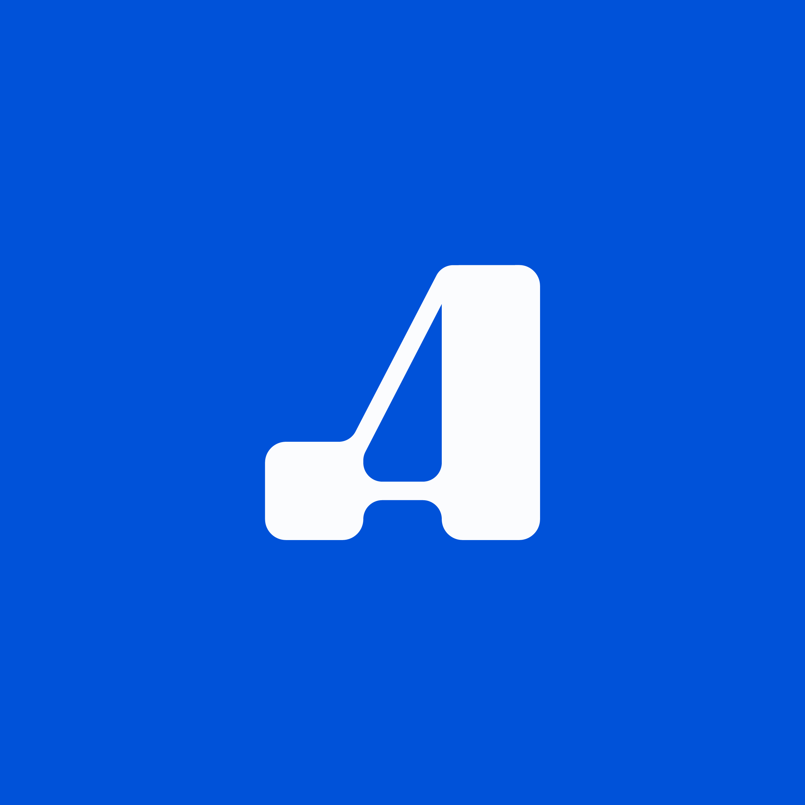

<!DOCTYPE html>
<html lang="fr">
<head>
  <meta charset="UTF-8" />
  <meta name="viewport" content="width=device-width, initial-scale=1.0" />
  <title>Andoxa — Workflows</title>
  <link rel="stylesheet" href="colors_and_type.css" />
  <style>
    *, *::before, *::after { box-sizing: border-box; margin: 0; padding: 0; }
    body { font-family: var(--font-sans); background: var(--background); color: var(--foreground); height: 100vh; overflow: hidden; }
    button { font-family: var(--font-sans); }
    input, select, textarea { font-family: var(--font-sans); }
    ::-webkit-scrollbar { width: 6px; height: 6px; }
    ::-webkit-scrollbar-track { background: transparent; }
    ::-webkit-scrollbar-thumb { background: #CBD5E1; border-radius: 3px; }
    select { cursor: pointer; }
  </style>
  <script src="https://unpkg.com/react@18.3.1/umd/react.development.js" integrity="sha384-hD6/rw4ppMLGNu3tX5cjIb+uRZ7UkRJ6BPkLpg4hAu/6onKUg4lLsHAs9EBPT82L" crossorigin="anonymous"></script>
  <script src="https://unpkg.com/react-dom@18.3.1/umd/react-dom.development.js" integrity="sha384-u6aeetuaXnQ38mYT8rp6sbXaQe3NL9t+IBXmnYxwkUI2Hw4bsp2Wvmx4yRQF1uAm" crossorigin="anonymous"></script>
  <script src="https://unpkg.com/@babel/standalone@7.29.0/babel.min.js" integrity="sha384-m08KidiNqLdpJqLq95G/LEi8Qvjl/xUYll3QILypMoQ65QorJ9Lvtp2RXYGBFj1y" crossorigin="anonymous"></script>
  <script type="text/babel" src="tweaks-panel.jsx"></script>
  <script type="text/babel" src="wf-components.jsx"></script>
</head>
<body>
<div id="root"></div>
<script type="text/babel">
const { useState, useEffect } = React;

/* ==================== SIDEBAR ==================== */
const NAV = [
  { id: 'dashboard',  label: 'Dashboard',     icon: 'M3 13h8V3H3v10zm0 8h8v-6H3v6zm10 0h8V11h-8v10zm0-18v6h8V3h-8z' },
  { id: 'campaigns',  label: 'Campagnes',      icon: 'M22 16.92v3a2 2 0 01-2.18 2 19.79 19.79 0 01-8.63-3.07A19.5 19.5 0 013.07 9.8a19.79 19.79 0 01-3.07-8.67A2 2 0 012 .84h3a2 2 0 012 1.72c.127.96.361 1.903.7 2.81a2 2 0 01-.45 2.11L6.09 8.63a16 16 0 006.29 6.29l1.95-1.95a2 2 0 012.11-.45c.907.339 1.85.573 2.81.7A2 2 0 0122 16.92z' },
  { id: 'workflows',  label: 'Workflows',      icon: 'M22 12h-4l-3 9L9 3l-3 9H2', badge: 3 },
  { id: 'prospects',  label: 'Prospects',      icon: 'M17 21v-2a4 4 0 00-4-4H5a4 4 0 00-4 4v2M9 11a4 4 0 100-8 4 4 0 000 8zm8 4v6m3-3h-6' },
  { id: 'crm',        label: 'Pipeline CRM',   icon: 'M21 16V8a2 2 0 00-1-1.73l-7-4a2 2 0 00-2 0l-7 4A2 2 0 002 8v8a2 2 0 001 1.73l7 4a2 2 0 002 0l7-4A2 2 0 0021 16z' },
  { id: 'booking',    label: 'Réservations',   icon: 'M8 2v4M16 2v4M3 10h18M21 8a2 2 0 00-2-2H5a2 2 0 00-2 2v12a2 2 0 002 2h14a2 2 0 002-2V8z' },
  { id: 'analytics',  label: 'Analytiques',    icon: 'M18 20V10M12 20V4M6 20v-6' },
  { id: 'settings',   label: 'Paramètres',     icon: 'M12 15a3 3 0 100-6 3 3 0 000 6zm0 0v6m0-18v3m-6.364 1.636l2.121 2.122M18.364 5.636l-2.121 2.121M3 12H6m15 0h-3m-1.636 6.364l-2.121-2.121M5.636 18.364l2.121-2.121' },
];

function SvgIcon({ d, size = 16, color = 'currentColor' }) {
  return (
    <svg width={size} height={size} viewBox="0 0 24 24" fill="none" stroke={color}
      strokeWidth="1.75" strokeLinecap="round" strokeLinejoin="round" style={{ display: 'block', flexShrink: 0 }}>
      <path d={d} />
    </svg>
  );
}

function Sidebar({ activePage, onNavigate }) {
  return (
    <div style={{ width: 220, height: '100vh', background: '#FAFAFA', borderRight: '1px solid #E2E8F0', display: 'flex', flexDirection: 'column', flexShrink: 0 }}>
      {/* Logo */}
      <div style={{ padding: '14px 14px 12px', borderBottom: '1px solid #E2E8F0' }}>
        <div style={{ display: 'flex', alignItems: 'center', gap: 8, padding: '4px 6px' }}>
          
          <span style={{ fontWeight: 700, fontSize: 15, letterSpacing: '-0.02em', color: '#0F172A' }}>Andoxa</span>
        </div>
      </div>
      {/* Nav */}
      <div style={{ flex: 1, padding: '8px 8px', overflowY: 'auto' }}>
        <div style={{ fontSize: 10, fontWeight: 700, textTransform: 'uppercase', letterSpacing: '0.07em', color: '#94A3B8', padding: '6px 8px 6px', marginBottom: 2 }}>Plateforme</div>
        {NAV.map(item => {
          const active = activePage === item.id;
          return (
            <div key={item.id} onClick={() => onNavigate(item.id)}
              style={{ display: 'flex', alignItems: 'center', gap: 8, padding: '7px 10px', borderRadius: 8, marginBottom: 1, cursor: 'pointer', background: active ? '#E8F0FD' : 'transparent', color: active ? '#0052D9' : '#374151', fontWeight: active ? 600 : 400, fontSize: 13.5, transition: 'all 100ms', userSelect: 'none' }}
              onMouseEnter={e => { if (!active) e.currentTarget.style.background = '#F1F5F9'; }}
              onMouseLeave={e => { if (!active) e.currentTarget.style.background = 'transparent'; }}>
              <SvgIcon d={item.icon} size={15} color={active ? '#0052D9' : '#64748B'} />
              <span style={{ flex: 1 }}>{item.label}</span>
              {item.badge && <span style={{ fontSize: 10, fontWeight: 700, background: '#0052D9', color: 'white', padding: '1px 6px', borderRadius: 10 }}>{item.badge}</span>}
            </div>
          );
        })}
      </div>
      {/* User */}
      <div style={{ padding: '10px 12px', borderTop: '1px solid #E2E8F0', display: 'flex', alignItems: 'center', gap: 8 }}>
        <div style={{ width: 30, height: 30, borderRadius: '50%', background: '#0052D9', color: 'white', display: 'flex', alignItems: 'center', justifyContent: 'center', fontSize: 11, fontWeight: 700, flexShrink: 0 }}>JP</div>
        <div style={{ flex: 1, minWidth: 0 }}>
          <div style={{ fontSize: 12.5, fontWeight: 600, color: '#0F172A' }}>Jean-Pierre</div>
          <div style={{ fontSize: 11, color: '#64748B', whiteSpace: 'nowrap', overflow: 'hidden', textOverflow: 'ellipsis' }}>jp@andoxa.fr</div>
        </div>
      </div>
    </div>
  );
}

/* ==================== TOP BAR ==================== */
function TopBar({ title, subtitle }) {
  return (
    <div style={{ height: 56, borderBottom: '1px solid #E2E8F0', background: 'white', display: 'flex', alignItems: 'center', justifyContent: 'space-between', padding: '0 24px', flexShrink: 0 }}>
      <div>
        <div style={{ fontWeight: 700, fontSize: 17, letterSpacing: '-0.02em', color: '#0F172A' }}>{title}</div>
        {subtitle && <div style={{ fontSize: 12.5, color: '#64748B', marginTop: 1 }}>{subtitle}</div>}
      </div>
      <div style={{ display: 'flex', gap: 8 }}>
        <button style={{ padding: '7px 14px', borderRadius: 8, border: '1px solid #E2E8F0', background: 'white', fontSize: 13, fontWeight: 500, color: '#374151', cursor: 'pointer', display: 'flex', alignItems: 'center', gap: 6 }}>
          <SvgIcon d="M4 6h16M4 12h16M4 18h7" size={14} color="#64748B" />
          Utiliser un modèle
        </button>
        <a href="Create Workflow.html" style={{ padding: '7px 16px', borderRadius: 8, border: 'none', background: '#0052D9', fontSize: 13, fontWeight: 600, color: 'white', cursor: 'pointer', display: 'flex', alignItems: 'center', gap: 6, textDecoration: 'none' }}>
          <SvgIcon d="M12 5v14M5 12h14" size={14} color="white" />
          Créer un workflow
        </a>
      </div>
    </div>
  );
}

/* ==================== WORKFLOW LIST ==================== */
const WORKFLOWS = [
  {
    id: 'w1', name: 'Séquence post-réunion WhatsApp', status: 'active',
    description: 'Confirmation, rappel, suivi et mise à jour CRM automatiques après une réunion réservée.',
    tags: ['WhatsApp', 'CRM'], lastModified: 'il y a 2 heures',
    stats: { enrolled: 142, replyRate: '68%', meetings: 38, conversion: '26%' },
    nodes: ['trigger', 'condition', 'whatsapp', 'wait', 'whatsapp', 'crm'],
  },
  {
    id: 'w2', name: 'LinkedIn → Bienvenue + Suivi', status: 'active',
    description: 'Invite LinkedIn acceptée → message de bienvenue → relance si pas de réponse après 3 jours.',
    tags: ['LinkedIn'], lastModified: 'il y a 1 jour',
    stats: { enrolled: 87, replyRate: '44%', meetings: 12, conversion: '13%' },
    nodes: ['trigger', 'wait', 'linkedin', 'condition', 'linkedin', 'task'],
  },
  {
    id: 'w3', name: 'Récupération no-show', status: 'paused',
    description: 'Détection des absences et relance automatique par WhatsApp avec création de tâche.',
    tags: ['WhatsApp', 'CRM'], lastModified: 'il y a 3 jours',
    stats: { enrolled: 24, replyRate: '29%', meetings: 6, conversion: '25%' },
    nodes: ['trigger', 'whatsapp', 'wait', 'condition', 'task', 'crm'],
  },
  {
    id: 'w4', name: 'Suivi post-proposition', status: 'draft',
    description: 'Workflow de nurturing après envoi d\'une proposition commerciale. Inclut analyse IA de l\'intention.',
    tags: ['IA', 'CRM'], lastModified: 'il y a 5 jours',
    stats: { enrolled: 0, replyRate: '—', meetings: 0, conversion: '—' },
    nodes: ['trigger', 'wait', 'ai', 'condition', 'whatsapp', 'linkedin'],
  },
  {
    id: 'w5', name: 'Réengagement prospects silencieux', status: 'error',
    description: 'Identifie les prospects sans activité depuis 30 jours et lance une séquence multi-canal.',
    tags: ['IA', 'WhatsApp', 'LinkedIn'], lastModified: 'il y a 7 jours',
    stats: { enrolled: 211, replyRate: '18%', meetings: 9, conversion: '4%' },
    nodes: ['trigger', 'ai', 'condition', 'whatsapp', 'linkedin', 'task'],
  },
];

const STATUS_CFG = {
  active: { label: 'Actif',     bg: '#ECFDF5', color: '#15803D', dot: '#10B981' },
  draft:  { label: 'Brouillon', bg: '#F1F5F9', color: '#475569', dot: '#94A3B8' },
  paused: { label: 'En pause',  bg: '#FFF7ED', color: '#C2410C', dot: '#F97316' },
  error:  { label: 'Erreur',    bg: '#FFF1F2', color: '#BE123C', dot: '#F43F5E' },
};

const TAG_CFG = {
  WhatsApp: { bg: '#ECFDF5', color: '#065F46' },
  LinkedIn: { bg: '#EFF6FF', color: '#0A66C2' },
  CRM:      { bg: '#EFF6FF', color: '#1E3A8A' },
  IA:       { bg: '#F0FDF4', color: '#047857' },
};

function WorkflowCard({ wf, onOpen }) {
  const sc = STATUS_CFG[wf.status];
  const [hov, setHov] = useState(false);
  return (
    <div onMouseEnter={() => setHov(true)} onMouseLeave={() => setHov(false)}
      style={{ background: 'white', border: `1px solid ${hov ? '#0052D9' : '#E2E8F0'}`, borderRadius: 14, padding: '18px 20px', cursor: 'pointer', transition: 'all 150ms', boxShadow: hov ? '0 4px 20px rgba(0,82,217,0.1)' : '0 1px 4px rgba(0,0,0,0.04)' }}
      onClick={() => onOpen(wf.id)}>
      {/* Top row */}
      <div style={{ display: 'flex', alignItems: 'flex-start', justifyContent: 'space-between', gap: 10, marginBottom: 8 }}>
        <div style={{ flex: 1 }}>
          <div style={{ display: 'flex', alignItems: 'center', gap: 8, marginBottom: 5, flexWrap: 'wrap' }}>
            <div style={{ fontSize: 14.5, fontWeight: 700, color: '#0F172A' }}>{wf.name}</div>
            <div style={{ display: 'flex', alignItems: 'center', gap: 5, background: sc.bg, padding: '2px 8px', borderRadius: 20, fontSize: 11, fontWeight: 600, color: sc.color }}>
              <div style={{ width: 5, height: 5, borderRadius: '50%', background: sc.dot }}></div>
              {sc.label}
            </div>
          </div>
          <div style={{ fontSize: 12.5, color: '#64748B', lineHeight: 1.5 }}>{wf.description}</div>
        </div>
      </div>

      {/* Node type pills */}
      <div style={{ display: 'flex', gap: 4, marginBottom: 14, flexWrap: 'wrap', alignItems: 'center' }}>
        {wf.nodes.map((type, i) => {
          const cfg = WF_NODE_TYPES[type];
          if (!cfg) return null;
          return (
            <React.Fragment key={i}>
              <div style={{ display: 'flex', alignItems: 'center', gap: 4, background: cfg.bg, border: `1px solid ${cfg.border}44`, borderRadius: 6, padding: '3px 7px' }}>
                {cfg.iconFn(10)}
                <span style={{ fontSize: 10.5, fontWeight: 600, color: cfg.color }}>{cfg.label}</span>
              </div>
              {i < wf.nodes.length - 1 && <div style={{ width: 10, height: 1, background: '#CBD5E1' }}></div>}
            </React.Fragment>
          );
        })}
      </div>

      {/* Analytics */}
      <div style={{ display: 'grid', gridTemplateColumns: 'repeat(4, 1fr)', gap: 0, background: '#F8FAFC', borderRadius: 10, overflow: 'hidden', border: '1px solid #E2E8F0' }}>
        {[
          { label: 'Prospects', value: wf.stats.enrolled },
          { label: 'Taux de réponse', value: wf.stats.replyRate },
          { label: 'Réunions', value: wf.stats.meetings },
          { label: 'Conversion', value: wf.stats.conversion },
        ].map((s, i) => (
          <div key={i} style={{ padding: '10px 12px', textAlign: 'center', borderLeft: i > 0 ? '1px solid #E2E8F0' : 'none' }}>
            <div style={{ fontSize: 16, fontWeight: 700, color: '#0F172A', letterSpacing: '-0.02em' }}>{s.value}</div>
            <div style={{ fontSize: 10.5, color: '#94A3B8', fontWeight: 500, marginTop: 1 }}>{s.label}</div>
          </div>
        ))}
      </div>

      {/* Footer */}
      <div style={{ display: 'flex', alignItems: 'center', justifyContent: 'space-between', marginTop: 12 }}>
        <div style={{ display: 'flex', gap: 5 }}>
          {wf.tags.map(t => {
            const tc = TAG_CFG[t] || TAG_CFG.WhatsApp;
            return <span key={t} style={{ fontSize: 10.5, fontWeight: 600, padding: '2px 7px', borderRadius: 5, background: tc.bg, color: tc.color }}>{t}</span>;
          })}
        </div>
        <span style={{ fontSize: 11, color: '#94A3B8' }}>Modifié {wf.lastModified}</span>
      </div>
    </div>
  );
}

/* ==================== LIST VIEW ==================== */
function WorkflowListView({ onOpenEditor }) {
  const [filter, setFilter] = useState('all');
  const filters = [
    { id: 'all', label: 'Tous', count: WORKFLOWS.length },
    { id: 'active', label: 'Actifs', count: WORKFLOWS.filter(w=>w.status==='active').length },
    { id: 'draft', label: 'Brouillons', count: WORKFLOWS.filter(w=>w.status==='draft').length },
    { id: 'paused', label: 'En pause', count: WORKFLOWS.filter(w=>w.status==='paused').length },
    { id: 'error', label: 'Erreur', count: WORKFLOWS.filter(w=>w.status==='error').length },
  ];
  const visible = filter === 'all' ? WORKFLOWS : WORKFLOWS.filter(w => w.status === filter);

  return (
    <div style={{ flex: 1, display: 'flex', flexDirection: 'column', overflow: 'hidden' }}>
      <TopBar title="Workflows" subtitle="Créez des séquences automatisées sur WhatsApp, LinkedIn, le booking et le CRM." />

      {/* Filter tabs */}
      <div style={{ padding: '12px 24px 0', background: 'white', borderBottom: '1px solid #E2E8F0', display: 'flex', gap: 0, flexShrink: 0 }}>
        {filters.map(f => (
          <button key={f.id} onClick={() => setFilter(f.id)}
            style={{ padding: '8px 16px', border: 'none', background: 'none', cursor: 'pointer', fontSize: 13, fontWeight: filter === f.id ? 600 : 400, color: filter === f.id ? '#0052D9' : '#64748B', borderBottom: filter === f.id ? '2px solid #0052D9' : '2px solid transparent', marginBottom: -1, transition: 'all 120ms', display: 'flex', alignItems: 'center', gap: 6 }}>
            {f.label}
            <span style={{ fontSize: 11, fontWeight: 700, padding: '1px 6px', borderRadius: 10, background: filter === f.id ? '#E8F0FD' : '#F1F5F9', color: filter === f.id ? '#0052D9' : '#94A3B8' }}>{f.count}</span>
          </button>
        ))}
      </div>

      {/* Workflow grid */}
      <div style={{ flex: 1, overflowY: 'auto', padding: '24px 24px' }}>
        <div style={{ display: 'grid', gridTemplateColumns: 'repeat(auto-fill, minmax(460px, 1fr))', gap: 14 }}>
          {visible.map(wf => (
            <WorkflowCard key={wf.id} wf={wf} onOpen={onOpenEditor} />
          ))}
          {/* Empty state if needed */}
          {visible.length === 0 && (
            <div style={{ gridColumn: '1/-1', textAlign: 'center', padding: '60px 0', color: '#94A3B8' }}>
              <div style={{ fontSize: 14 }}>Aucun workflow dans cette catégorie.</div>
            </div>
          )}
        </div>

        {/* Placeholder CTA */}
        <div style={{ marginTop: 20, padding: '24px', background: 'linear-gradient(135deg, #E8F0FD 0%, #EFF6FF 100%)', borderRadius: 14, border: '1px dashed #93C5FD', display: 'flex', alignItems: 'center', gap: 20 }}>
          <div style={{ width: 48, height: 48, borderRadius: 12, background: '#0052D9', display: 'flex', alignItems: 'center', justifyContent: 'center', flexShrink: 0 }}>
            <SvgIcon d="M12 5v14M5 12h14" size={22} color="white" />
          </div>
          <div style={{ flex: 1 }}>
            <div style={{ fontSize: 15, fontWeight: 700, color: '#0F172A', marginBottom: 3 }}>Créer un nouveau workflow</div>
            <div style={{ fontSize: 13, color: '#64748B' }}>Partez de zéro ou choisissez parmi nos modèles de séquences commerciales prêts à l'emploi.</div>
          </div>
          <a href="Create Workflow.html"
            style={{ padding: '9px 20px', borderRadius: 9, border: 'none', background: '#0052D9', fontSize: 13.5, fontWeight: 600, color: 'white', cursor: 'pointer', whiteSpace: 'nowrap', flexShrink: 0, textDecoration: 'none' }}>
            Créer un workflow
          </a>
        </div>
      </div>
    </div>
  );
}

/* ==================== TWEAKS ==================== */
const TWEAK_DEFAULTS = /*EDITMODE-BEGIN*/{
  "accentColor": "#0052D9",
  "sidebarWidth": 220,
  "showAnalytics": true,
  "defaultView": "list"
}/*EDITMODE-END*/;

/* ==================== ROOT APP ==================== */
function App() {
  const [page, setPage] = useState(() => localStorage.getItem('andoxa_wf_page') || 'workflows');
  const [view, setView] = useState(() => localStorage.getItem('andoxa_wf_view') || TWEAK_DEFAULTS.defaultView);
  const [editingId, setEditingId] = useState(null);
  const [wfStatuses, setWfStatuses] = useState({ w1: 'active', w2: 'active', w3: 'paused', w4: 'draft', w5: 'error' });

  const [tweaks, setTweak] = useTweaks(TWEAK_DEFAULTS);

  const navigate = (p) => { setPage(p); localStorage.setItem('andoxa_wf_page', p); };

  const openEditor = (id) => {
    setEditingId(id);
    setView('editor');
    localStorage.setItem('andoxa_wf_view', 'editor');
  };

  const backToList = () => {
    setView('list');
    localStorage.setItem('andoxa_wf_view', 'list');
  };

  const setStatus = (id, s) => setWfStatuses(prev => ({ ...prev, [id]: s }));

  const currentWf = WORKFLOWS.find(w => w.id === editingId) || WORKFLOWS[0];

  return (
    <div style={{ display: 'flex', height: '100vh', overflow: 'hidden', fontFamily: 'var(--font-sans)' }}>
      <Sidebar activePage={page === 'workflows' ? 'workflows' : page} onNavigate={navigate} />
      <div style={{ flex: 1, display: 'flex', flexDirection: 'column', minWidth: 0, overflow: 'hidden' }}>
        {page !== 'workflows'
          ? <div style={{ flex: 1, display: 'flex', alignItems: 'center', justifyContent: 'center', color: '#94A3B8', fontSize: 14 }}>
              <div style={{ textAlign: 'center' }}>
                <div style={{ fontSize: 32, marginBottom: 12, opacity: 0.3 }}>◻</div>
                <div>{NAV.find(n=>n.id===page)?.label} — à venir</div>
              </div>
            </div>
          : view === 'list'
            ? <WorkflowListView onOpenEditor={openEditor} />
            : <WorkflowCanvas
                workflowName={currentWf.name}
                status={wfStatuses[editingId] || 'draft'}
                onSetStatus={(s) => setStatus(editingId, s)}
                onBack={backToList}
              />
        }
      </div>
      <TweaksPanel title="Tweaks">
        <TweakSection label="Apparence" />
        <TweakColor label="Couleur principale" value={tweaks.accentColor} onChange={v => setTweak('accentColor', v)} />
        <TweakToggle label="Afficher les analytics" value={tweaks.showAnalytics} onChange={v => setTweak('showAnalytics', v)} />
        <TweakSection label="Vue par défaut" />
        <TweakRadio label="Vue initiale" value={tweaks.defaultView} options={['list','editor']} onChange={v => setTweak('defaultView', v)} />
      </TweaksPanel>
    </div>
  );
}

ReactDOM.createRoot(document.getElementById('root')).render(<App />);
</script>
</body>
</html>
